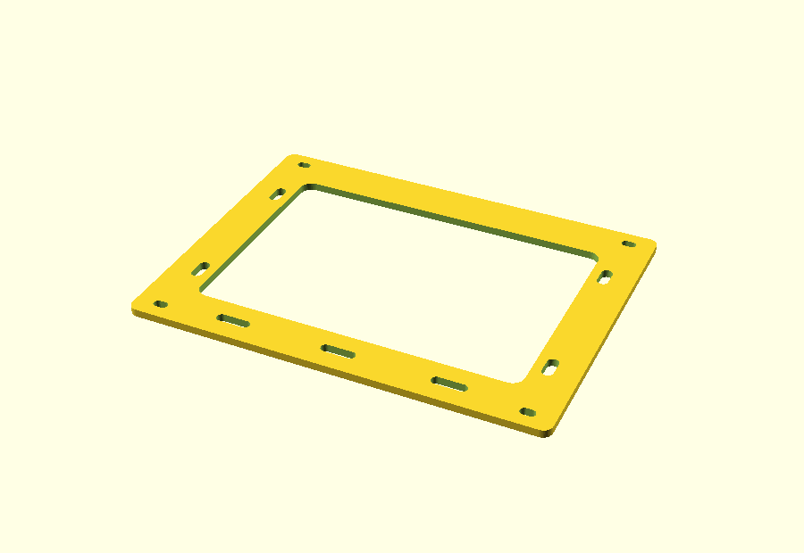
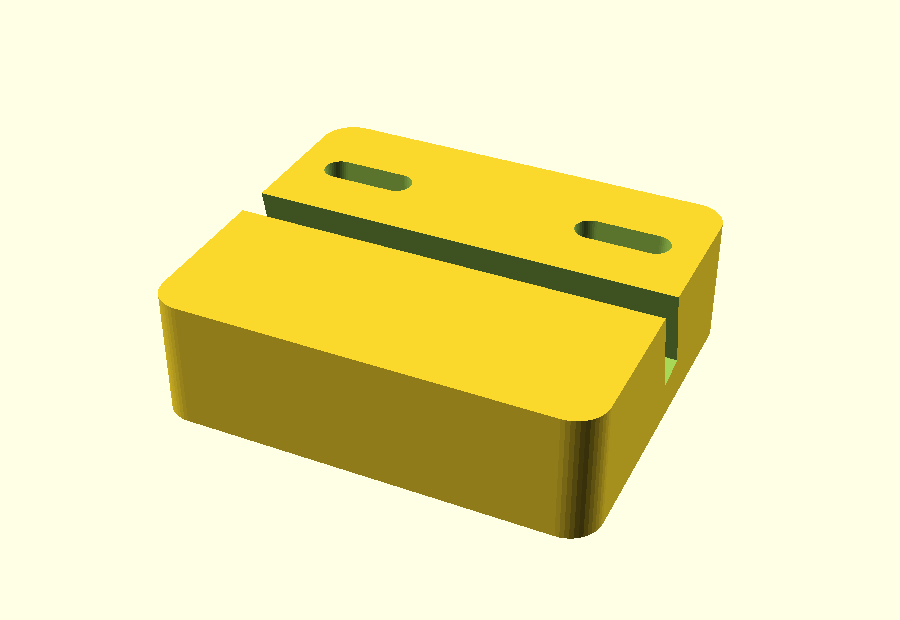
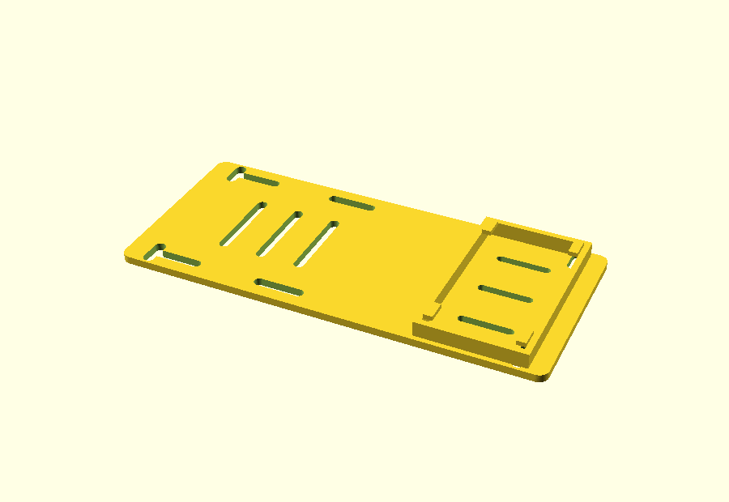
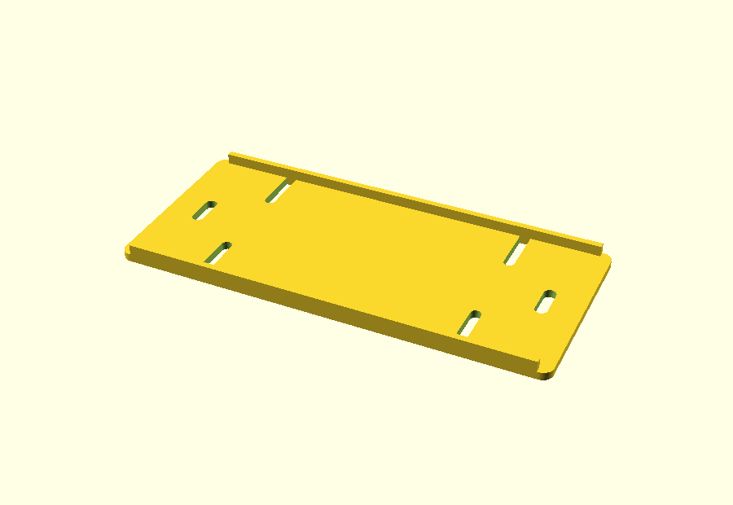
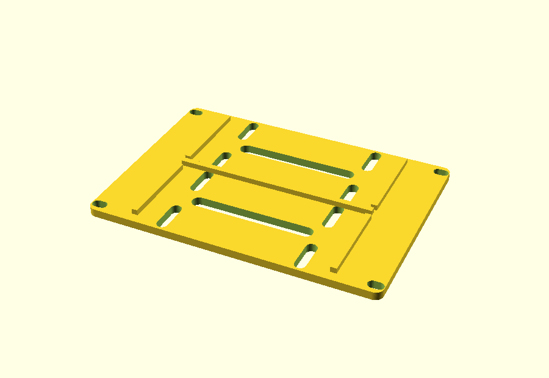
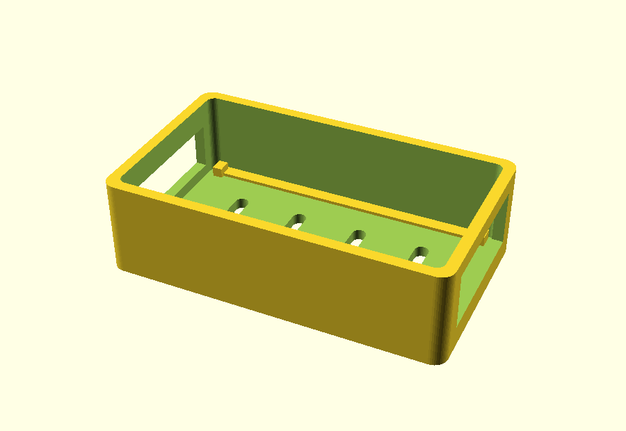
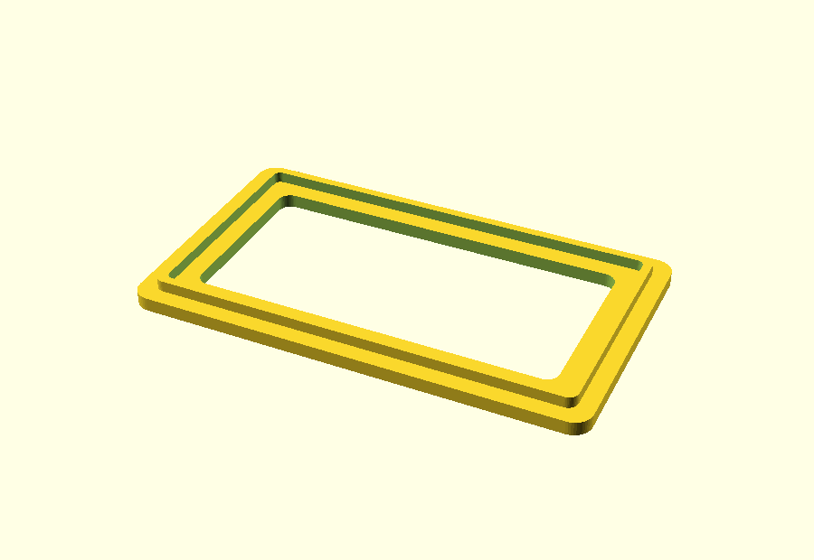
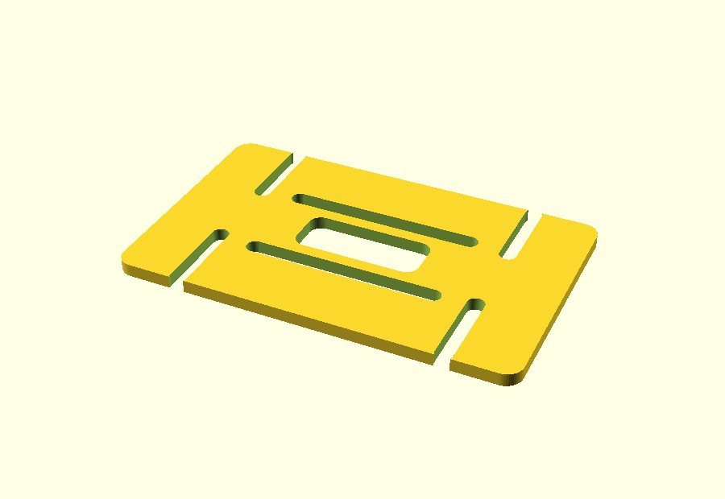

CTR-01

X170,0 mm
Y129,0 mm
Z3,2 mm
Raspberry Pi 4 + pantalla + TTGO gateway + energía móvil.




Prototipo abierto para demo y bandeja protegida para despliegue.




Referencias elegidas para que el conjunto sea reproducible.
| Equipo | Componente | Especificación | Estado |
|---|---|---|---|
| Centro | Pantalla | Waveshare 7inch HDMI LCD (C), candidata visual | REFERENCIA BETA |
| Centro | Protección / térmica | Carcasa RPi4 + ventilador oficiales | SELECCIONADO |
| Centro | Energía | Baseus Adaman 65 W, 20 Ah, USB-C 5 V/3 A | SELECCIONADO |
| Nodo | Caja | Hammond 1554F2GYCL, policarbonato IP68 | SELECCIONADO |
| Nodo | Batería | 1S protegida, 2.000 o 4.400 mAh | 2 OPCIONES |
| Nodo | Pasamuros | Amphenol 095-902-569-006, SMA IP67, RG-316 | SELECCIONADO |
Resumen de fabricación y próxima iteración.
El sistema ya reúne piezas, referencias, cotas, cableado y criterios de sustitución. Las ocho mallas pasan validación geométrica.
La siguiente iteración concentra las comprobaciones de integración con el hardware real.
Fabricación, abastecimiento y pruebas.